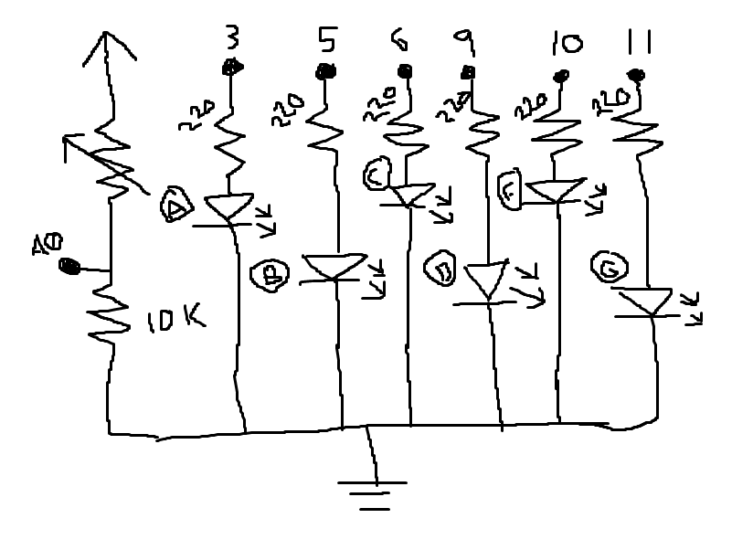
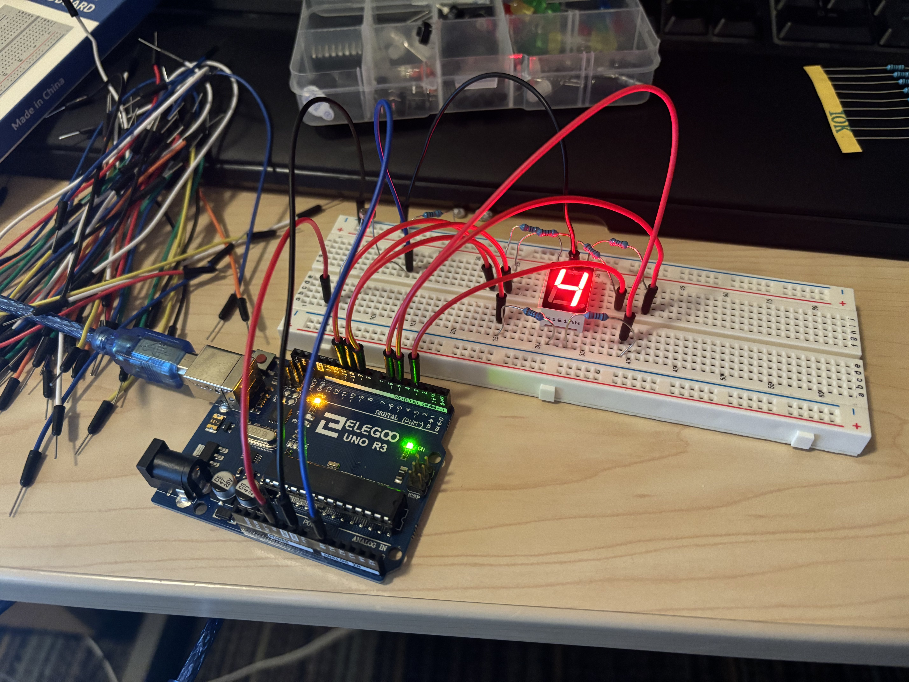
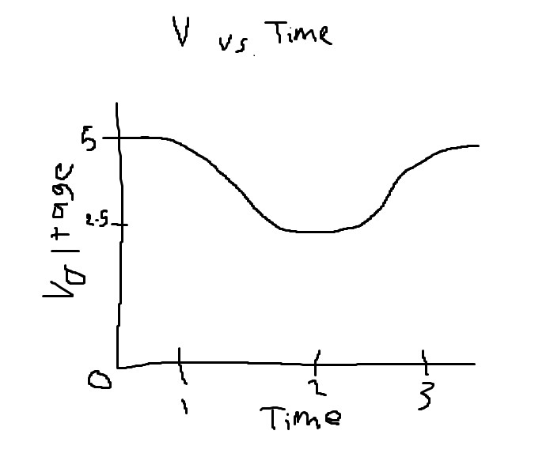

Sam Roberts' Assignment 3: Input/Output!

This is the schematic for the circuit. My circuit utilizes the a seven segment display to show numbers
but only six of the segments are needed to display 4, 3, and 9, so only 6 of the segments LEDs are
wired. A voltage divider is used as a means of getting readable input from the photoresistor. As it gets
darker around the photoresistor and its resisitance increases, the A0 pin reads lower values of voltage after the first resistor.
A 10k resistor is used because it roughly matches the max resistance of the photoresistor, which will then give the voltage divider
conisistent values between roughly 5 and 2.5V. The letters next to each diode are the letters associated with specific LEDs on the display
For each of the red LEDs they are all wired in series with a 220 ohm resistor to limit the current to close to 20 mA
(3.2/0.02). All LEDs are grounded through the grounding prong of the seven segment display.
Below is an image of the circuit.

All of the pins are wired into the seven segment display through an in series resistor to limit the current into the LEDs. All
of which are then grounded through the top gorunding prong and connected to the blue grounded bar. The voltage divider reads the
voltage between the photoresistor and a 10k resisitor through the blue wire. The divider is also grounded through the blue bar
which is connected to ground on the Arduino. The divider is powered with 5 volts from the Arduino board.
int bottom_mid = 9; // initialize pin to associated part of 7-segment display
int bottom_right = 6; // initialize pin to associated part of 7-segment display
int mid = 11; // initialize pin to associated part of 7-segment display
int top_right = 5; // initialize pin to associated part of 7-segment display
int top_left = 10; // initialize pin to associated part of 7-segment display
int top_mid = 3; // initialize pin to associated part of 7-segment display
int output = 0; // output value for pins
int senMax = 0; // max value of analogRead during calbration
int senMin = 1023; // min value of analogRead during calbration
int senVal = 0; // value read from sensor
int number_choose = 0; // Determines which number to show on display
void setup() {
// put your setup code here, to run once:
pinMode(bottom_mid, OUTPUT); // Set 7 segment display pins to output
pinMode(bottom_right, OUTPUT); // Set 7 segment display pins to output
pinMode(mid, OUTPUT); // Set 7 segment display pins to output
pinMode(top_right, OUTPUT); // Set 7 segment display pins to output
pinMode(top_left, OUTPUT); // Set 7 segment display pins to output
pinMode(top_mid, OUTPUT); // Set 7 segment display pins to output
Serial.begin(9600); // Begin serial to print to serial monitor
Serial.println("Start"); // Print start when calibration begins
while (millis() < 5000) { // For 5 sec after bootup
senVal = analogRead(A0); // Read value from voltage divider
if (senVal > senMax) { // Checks if value is max yet detected
senMax = senVal; // Sets max recored value to senor value
}
if (senVal < senMin) { // Checks if value is min yet detected
senMin = senVal; // Sets min recored value to senor value
}
}
senMin += 10; // Adds 10 max to cushion to value to make sure can turn all the way off
senMax -= 10; // Subtracts 10 min to cushion to value to make sure can turn all the way on
Serial.println("End"); // Print end when calibration ends
}
void loop() {
// put your main code here, to run repeatedly:
number_choose = map(analogRead(A0), senMin, senMax, 0, 2); // Split range of recorded values into thirds
number_choose = constrain(number_choose, 0 ,2); // Constrains the output of mapping to between 0 and 2
output = map(analogRead(A0), senMin, senMax, 0, 255); // Maps output to 0 to 255 for analogWrite
if (number_choose == 2) { // If output is in the highest third, dispaly a 4
analogWrite(top_left, constrain(output, 0, 255)); // Light LEDs needed to display a 4 and set others to 0.
analogWrite(top_mid, 0); // Example of LED set to off
analogWrite(top_right, constrain(output, 0, 255)); // All lit LEDs are brighter with higher values read and cosntrained between 0 and 255
analogWrite(mid, constrain(output, 0, 255));
analogWrite(bottom_right, constrain(output, 0, 255));
analogWrite(bottom_mid, 0);
} else if (number_choose == 1) { // If output is in the middle third, dispaly a 3
analogWrite(top_left, 0); // Light and turn off LEDs to show a 3, lights behave the same as the 4
analogWrite(top_mid, constrain(output, 0, 255));
analogWrite(top_right, constrain(output, 0, 255));
analogWrite(mid, constrain(output, 0, 255));
analogWrite(bottom_right, constrain(output, 0, 255));
analogWrite(bottom_mid, constrain(output, 0, 255));
} else { // If output is in the middle third, dispaly a 9
analogWrite(top_left, constrain(output, 0, 255)); // Light and turn off LEDs to show a 9, lights behave the same as the 4 and 3
analogWrite(top_mid, constrain(output, 0, 255));
analogWrite(top_right, constrain(output, 0, 255));
analogWrite(mid, constrain(output, 0, 255));
analogWrite(bottom_right, constrain(output, 0, 255));
analogWrite(bottom_mid, 0);
}
}
 Final Circuit in action!
Final Circuit in action!
1. For a voltage divider to work the varible resistor can be either R1 or R2. The equation
for V out (R2 / (R1 + R2)) * V in shows that the voltage out is just the percentage of total resistance from R2 times
the input voltage. If we had 5 volts in and R1 of 50 and R2 of 50, the equation would give 50/100 * 5 = 2.5, which
makes sense since R2 is 50% of the resistance and V in is 5. If R1 is varible and becomes 100, R2 is now only 33%
of the total resistance so V out = 1.65. Now if R2 is varible and becoems 100 it accounts for 66% of the resisitance
and V out is 3.3. Either resistor can be varible but it important to keep track of how the relationship between the
readings and the resistance changes depending on which is varible.

3. Changing the bits would change the range at which the values have to be mapped. Increasing the bits means that the
numbers can lay in a bigger range. So instead of map(analogRead(A0), 0, 1023, 0, 255) for 8 and 10 bit values, we would
have to write map(analogRead(A0), 0, 65536, 0, 1023) for 10 and 16 bit values.